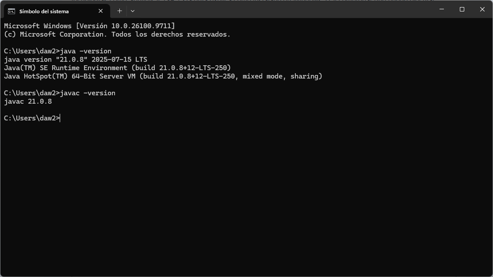
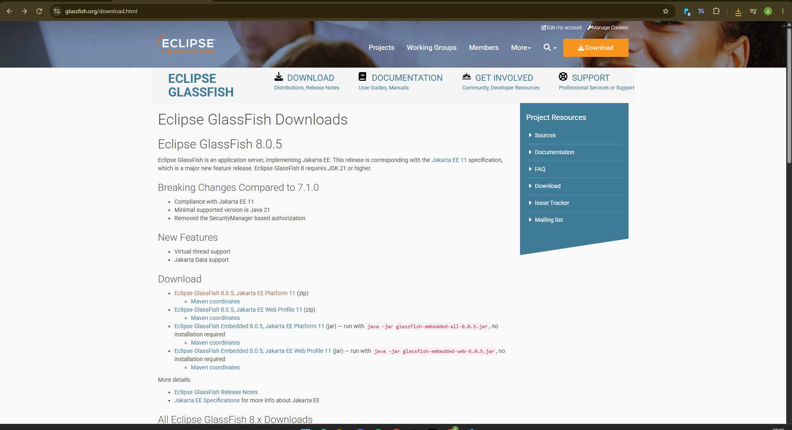
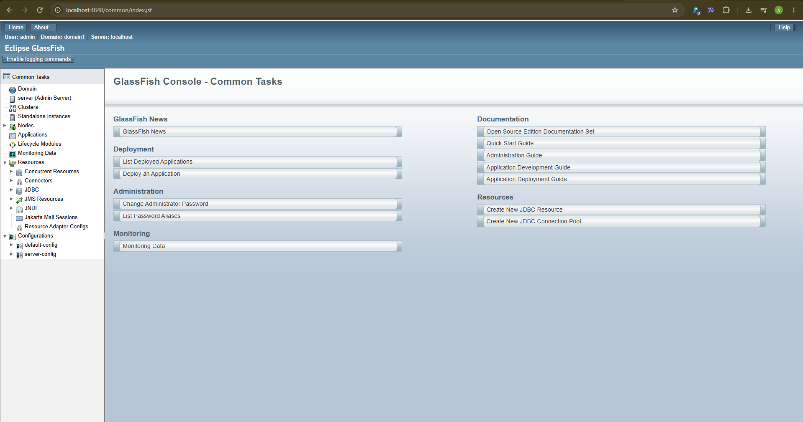
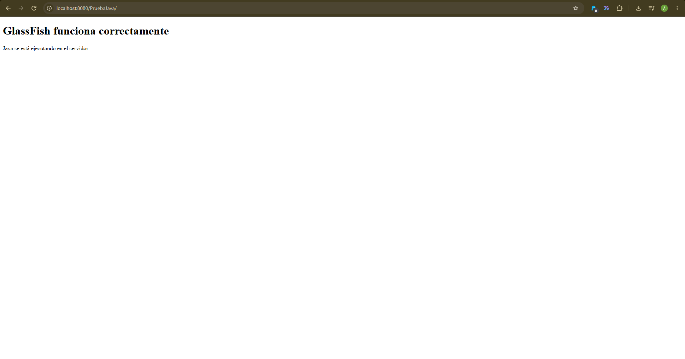

1. ¿Qué es Eclipse GlassFish?
Eclipse GlassFish es un servidor de aplicaciones de código abierto que implementa la plataforma Jakarta EE. Permite ejecutar aplicaciones web desarrolladas con tecnologías Java como Servlets, JSP y Enterprise JavaBeans (EJB). Esta guía explica cómo instalarlo en Windows 11 y comprobar que puede ejecutar código Java.
2. Requisitos previos
- Windows 11.
- Java JDK 21 o superior.
- Conexión a Internet para descargar el software.
- Espacio suficiente en el disco para descomprimir los archivos.
Comprobar Java
- Abre una terminal CMD de Windows.
- Comprueba que Java está instalado:
java -version
javac -versionLos dos comandos deben mostrar la versión instalada. GlassFish 8 requiere Java 21 o una versión posterior.

3. Descargar Eclipse GlassFish
- Abre la página oficial de descargas de Eclipse GlassFish.
- Selecciona la versión estable 8.0.5.
- Descarga la distribución Full Platform de Jakarta EE 11 en formato ZIP.
- Guarda el archivo descargado en la carpeta Descargas de Windows.
Esta distribución incluye las funcionalidades necesarias de Jakarta EE para ejecutar aplicaciones web y empresariales.

4. Instalar y configurar GlassFish
Descomprimir los archivos
- Localiza el archivo ZIP descargado en la carpeta Descargas.
- Haz clic derecho sobre el archivo y selecciona Extraer todo.
- Extrae el contenido en la unidad C:.
Se creará la carpeta C:\glassfish8, que contiene los archivos del servidor.
Dentro se encuentra el directorio glassfish.
Iniciar el servidor
- Abre una terminal CMD de Windows.
- Accede al directorio de ejecutables de GlassFish:
cd C:\glassfish8\glassfish\bin- Inicia el dominio predeterminado ejecutando:
asadmin.bat start-domain
GlassFish iniciará el dominio domain1 y utilizará el puerto HTTP 8080.
La consola de administración estará disponible en el puerto 4848.
Para comprobar que el servidor está funcionando, accede a:
http://localhost:4848
5. Ejecutar código Java mediante JSP
- Crea una carpeta llamada
PruebaJavaen la unidad C:. - Dentro de esa carpeta, crea un archivo llamado
index.jsp. - Escribe el siguiente contenido y guarda el archivo:
<%@ page contentType="text/html; charset=UTF-8" pageEncoding="UTF-8" %>
<!DOCTYPE html>
<html lang="es">
<head>
<meta charset="UTF-8">
<title>Prueba Java</title>
</head>
<body>
<h1>GlassFish funciona correctamente</h1>
<%
String mensaje = "Java se está ejecutando en el servidor";
%>
<p><%= mensaje %></p>
</body>
</html>Desplegar la aplicación
- Abre una terminal CMD y crea el archivo WAR de la aplicación:
jar -cvf C:\PruebaJava.war -C C:\PruebaJava .- Despliega la aplicación en GlassFish:
C:\glassfish8\glassfish\bin\asadmin.bat deploy C:\PruebaJava.war- Abre el navegador y accede a la siguiente dirección:
http://localhost:8080/PruebaJava/Debe aparecer el encabezado «GlassFish funciona correctamente» y el mensaje generado mediante código Java. Esto comprueba que GlassFish está ejecutando una página JSP.

Para detener el servidor, vuelve a la terminal y ejecuta:
asadmin.bat stop-domain